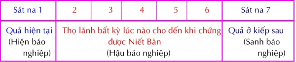
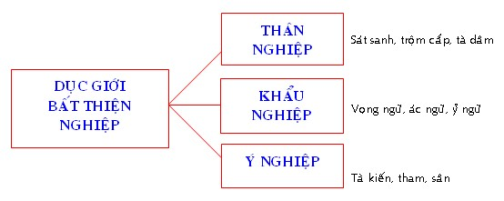
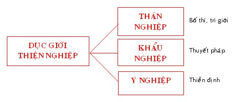
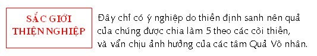
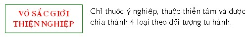

|
PHẬT GIÁO NGUYÊN THỦY THERAVÀDA VI DIỆU PHÁP BAN HOẰNG PHÁP |
|
BuddhaSasana Home Page |
Vietnamese, with Unicode VU Times or CN-Times font |
|
|
PHẬT GIÁO NGUYÊN THỦY THERAVÀDA VI DIỆU PHÁP BAN HOẰNG PHÁP |
|
Xin lưu ý: Cần có phông UnicodeViệt-Phạn VU Times hay CN-Times cài vào máy để đọc các chữ Pàli. |
|
BÀI 19. PHI LỘ Là các pháp không thuộc lộ trình tâm (thoát ly lộ trình tâm). Các pháp này được chia làm ba loại: 1.- Người, I. NGƯỜI Còn gọi là chúng sanh, loài hữu tình, loài có tâm thức. Ðược chia làm 12 loại: 1) Người Khổ Là những chúng sanh thiếu hạnh phúc, thường bị khổ đau. Người khổ được chia ra làm 4 loại: - Ðịa ngục (Niraya): là những chúng sanh hằng bị mọi thống khổ, chẳng có sự an vui. - Ngạ quỹ (Peta): là những chúng sanh hằng bị đói khát, chẳng thụ hưởng được các thực phẩm của Nhơn Thiên; do căn bỏn xẽn, hủy bán Tam Bảo, không tin Chánh Pháp, ... - Bàng sanh (Tiracchāna): là loại chúng sanh đầu đuôi ngang nhau, từ ngữ căn Tiro: ngang + Acchāna: đi. Các súc sanh đi ngang, bò xuống, không đi thẳng như người. Có loại sanh bằng trứng (noãn sanh), có loại sanh con (thai sanh), có loại sanh nơi ẩm thấp (thấp sanh), không thấy nói tới hóa sanh. - A-Tu-La (Asura): là những vị không có hoan lạc, thường rất hung dữ. Tục thường gọi là Thần, có đôi lúc vì quá sợ sệt, còn được tôn là Thánh như quan Công ... loại A-Tu-La này khác với loại A-Tu-La Thiên, đối thủ của trời Ðế Thích và sống ở Tam Thập Tam Thiên (trời Ðao Lợi), tục truyền ở dưới biển cũng có A-Tu-La vương và còn có một loại A-Tu-La căn duyên giống như Ngạ quỹ thường ở nơi cồn bãi, rừng núi hoặc hang động, ăn uống những vật nhơ nhớp Tâm của những chúng sanh này thuộc bản năng và hành động của chúng bị Tham, Sân Si chi phối trong đời trước. Chúng tục sanh bằng tâm Quan Sát thọ Xã trong Dục giới Vô Nhân Bất Thiện tâm [thân thức thọ Khổ]. Những hạng người này không thể chứng thiền tâm. 2) Người Lạc Người lạc là những người có nhiều hạnh phúc hơn những người khổ, họ không đến nổi chịu nhiều khổ đau như những người khổ. Những người này tục sinh bằng tâm Quan sát thọ Xã trong tâm Thiện Vô Nhân [thân thức thọ Lạc], hạng người này cũng không thể chứng thiền hay đạo quả được. Những người lạc ở cõi người thuộc về thai sanh, ở cõi Tứ thiên vương và vô tưởng thì hoàn toàn hóa sanh. Những người ở cõi Vô tưởng tục sinh bằng sắc pháp chứ không có tâm. Khi tục sinh làm người, những hạng người này thường thiếu trí tuệ, hay bị tàn tật. Hai loại người kể trên vì tục sinh bằng tâm Quan Sát thọ Xã Vô Nhân, trong tâm Quả không có nhân nào, nên còn gọi là người Vô nhân (Ahetuka). 3) Người Nhị Nhân (Duhetuka) Người Nhị nhân là người thiếu trí tuệ lúc tái sanh vì tâm tục sinh của người nhị nhân là một trong 4 tâm Quả Tịnh hảo ly trí (thiếu nhân Vô Si). Người nhị nhân cũng không thể đắc thiền hay đạo quả được. Những người này được tái sanh trong 7 cõi là: cõi người và 6 cõi trời Dục giới. Sở dỉ gọi là người Nhị nhân vì tâm Tục Sinh của những người này chỉ có Vô Tham và Vô Sân chi phối. Những người Nhị nhân và Vô nhân không bao giờ có tâm Duy Tác hay Tâm An Chỉ, khi sanh làm người chúng không có tâm Quả Tịnh Hảo hợp trí (vì chúng không có tâm Thiện hợp trí đủ tam tư làm nhân trong đời trước). 4) Người Tam Nhân Những chúng sanh nào có tâm mạnh mẽ và sáng suốt vì hành động của chúng trong quá khứ được Vô Tham, Vô Sân và Vô Si chi phối, được gọi là người Tam nhân. Những người này được tái sanh với đầy đũ trí tuệ, có thể tu thiền và chứng được các đạo quả của Siêu Thế tâm. Tâm Tục Sinh của người Tam nhân là 4 tâm Quả Tịnh hảo hợp trí hay 9 tâm Quả Ðáo Ðại. Trong 31 cõi, người Tam nhân có thể tái sanh được 21 cõi (trừ cõi Vô Tưởng, 4 cõi Ác thú và 5 cõi Tịnh cư). 5) Người Sơ Ðạo Là người sát trừ phiền não và chứng ngộ Niết-Bàn lần đầu tiên. Người Sơ Ðạo diêt trừ được 3 phiền não đầu là: Thân Kiến, Hoài Nghi và Giới Cấm Thủ. Người Sơ Ðạo có thể có mặt trong 17 cõi là cõi người, 6 cõi trời Dục giới, 3 cõi Sơ Thiền, 3 cõi Nhị Thiền, 3 cõi Tam Thiền và cõi Tứ Thiền Quảng Quả. 6) Người Nhị Ðạo Là người sát trừ phiền não và chứng ngộ Niết-Bàn lần đầu thứ hai. Người Nhị Ðạo làm giảm nhẹ thêm hai phiền não kế là Tham Dục và Sân. Người Nhị Ðạo có thể có mặt trong 21 cõi là 4 cõi Vô Sắc và 17 cõi mà người Sơ Ðạo có thể sanh lên. 7) Người Tam Ðạo Là người sát trừ phiền não và chứng ngộ Niết-Bàn lần đầu thứ ba. Người Tam Ðạo dứt tuyệt hai thứ phiền não Tham Dục và Sân. Người Tam Ðạo có thể có mặt trong 21 cõi như người Nhi Ðạo. 8) Người Tứ Ðạo Là người sát trừ phiền não và chứng ngộ Niết-Bàn lần đầu thứ Tư. Người Tứ Ðạo sát tuyệt 5 phiền não còn lại là Sắc Ái, Vô Sắc Ái, Ngã Mạn, Phóng Dật, Vô Minh. Như vậy 10 phiền não chỉ được diệt tuyệt hoàn toàn khi hành giả chứng đến Tứ Ðạo. Người Tứ Ðạo có thể có mặt trong 26 cõi là 31cõi trừ cõi Vô Tưởng và 4 cõi ác thú. 9) Người Sơ Quả Người Sơ Quả là người đã chứng đắc Sơ Ðạo. Người Sơ Quả nếu không chứng chứng thêm Ðạo Quả cao hơn thì cũng không quá 7 kiếp sanh trở lại làm người nên còn gọi là Quả Thất Lai; người Sơ Quả không bao giờ sa đọa vào 4 cõi khổ (4 ác đạo) và chắc chắn sẽ được Niết-Bàn nên còn gọi là Dự Lưu hay Nhập Lưu. Người Sơ Quả có thể tục sinh trong 21 cõi là cõi người, 4 cõi Vô Sắc, 6 cõi trời Dục Giới, 3 cõi Sơ Thiền, 3 cõi Nhị Thiền, 3 cõi Tam Thiền và cõi Tứ Thiền Quảng Quả. 10) Người Nhị Quả Người Nhị Quả là người đã chứng đắc Nhị Ðạo. Người Nhị Quả nếu không chứng Ðạo Quả khác thì chỉ tái sanh lại cõi Dục giới một lần nên còn gọi là Nhất Lai. Người Nhị Quả có thể tục sinh ở 21 cõi giống như người Sơ Quả. 11) Người Tam Quả Người Tam Quả là người đã chứng đắc Tam Ðạo. Người Tam Quả nếu không đắc A-La-Hán Ðạo thì sẽ sanh về cõi Ngũ Tịnh Cư Thiên (5 cõi trời tịnh cư) chứ không trở lại cõi Dục giới nửa nên còn gọi là Bất Lai. Ở cõi trời Tịnh Cư được phân làm 5 cõi, người Tam Quả tùy theo lúc tu tập, phát triển chi thiền nào mạnh sẽ được tái sanh vào một trong 5 cõi đó: nếu vị Tam Quả có Tín căn mạnh thì sẽ tục sinh ở cõi Vô Phiền Thiên; nếu vị Tam Quả có Tấn căn mạnh thì sẽ tục sinh ở cõi Vô Nhiệt Thiên; nếu vị Tam Quả có Niệm căn mạnh thì sẽ tục sinh ở cõi Thiện Kiến Thiên; nếu vị Tam Quả có Ðịnh căn mạnh thì sẽ tục sinh ở cõi Thiện Hiện Thiên; nếu vị Tam Quả có Tuệ căn mạnh thì sẽ tục sinh ở cõi Sắc Cứu Cánh Thiên; vị Tam quả có thể có mặt trong 26 cõi là 31cõi trừ cõi Vô Tưởng và 4 cõi ác thú. Vị Tam Quả dù không đắc Thiền cũng được sanh về cõi Sơ Thiền. 12) Người Tứ Quả Người Tứ Quả là người đã chứng đắc Tứ Ðạo. Người Tứ Quả ở cõi nào thì khi Ngũ Uần tiêu hoại sẽ Niết-Bàn nơi ấy chứ không còn tái sanh nên còn gọi là Vô Sanh; vì đã diệt trừ sạch các phiền não, hoàn toàn trong sạch, xứng đáng cho người trời cúng dường nên còn gọi là Ưng Cúng. II. CÕI 1) Cõi Dục Giới: Gồm 11 cõi được chia ra như sau a) Cõi Ác Thú (Apāyabhūmi): từ ngữ căn apa + aya: chỗ không có hạnh phúc. Gồm 4 cõi. b) Ðịa Ngục (Niraya): từ ngữ căn Nis + aya: đi đến chỗ tiêu diệt. Cõi này chỉ có mọi sự thống khổ chứ không có sự an vui. c) Ngạ Quỹ (Pettivisaya): Peta từ ngữ căn Pa + i + ta: chúng sanh đã đi, nghĩa là đã chết. Chúng không phải là ma quỹ vô hình, chúng có sắc thân nhưng mắt người không thể thấy được. Chúng không có cảnh giới riêng và luôn luôn bị đói khát. Chúng sống trong rừng núi, hang động hay các chỗ nhớp nhúa. d) Súc Sanh (Tiricchānayoni): từ ngữ căn Tiro: ngang + Acchāna: đi. Các sinh vật đi ngang, bò đi, không đi thẳng như người, còn gọi là Bàng sanh. e) A-Tu-La (Asurakāya): Asura nghĩa là những vị không có hoan lạc hay không chói sáng. Những chúng sanh này rất hung dữ, hay gây gổ. Loại A-Tu-La sanh ở đây không giống với loại A-Tu-La chư thiên chuyên gây chiến với chư thiên và sống ở cõi Tam Thập Tam Thiên. Tâm Tục Sinh trong cõi Ác Thú là tâm Quan Sát thọ Xã trong Bất Thiện Dục Giới Vô Nhân. f) Cõi người (Manussa): những người có tâm cao thượng (Ma-no Ussannaṃ etesaṃ). Chữ Manusya có nghĩa là con của Manu, loài người trở thành có văn minh sau vị tu sĩ Manu. g) Cõi Trời Dục Giới (Kāmmasugatibhūmi): gồm 6 cõi. - Tứ Thiên Vương (Cātummahārājika): đây là cõi thấp nhất trong các cõi chư thiên. - Tam Thập Tam Thiên (Tāvatimsa): Ðế Thích (Magha) cư ngụ ở đây. Sở dĩ gọi như vậy vì theo tích truyện có 33 vị dưới sự hướng dẩn của Ðế Thích đã làm những việc thiện và được tục sinh tại đây. - Dạ Ma Thiên (Yāma): Yam nghĩa là tàn phá, diệt trừ. Nơi đây mọi đau khổ đều được trừ diệt. - Ðâu Suất Ðà Thiên (Tusita): những vị sống sung sướng. Theo tục truyền, vị Bồ Tác tương lai (Di Lặc) đang sống tại đây và chờ cơ hội thuận tiện để tái sinh làm người và thành Phật. - Hóa Lạc Thiên (Nimmānarati): những vị sống hoan lạc trong những lâu đài tự tạo ra. - Tha Hóa Tự Tại Thiên (Paranimmitavasavatti): những vị đem dưới quyền của mình các vật do các vị khác đã hóa hiện. Tâm Tục sinh trong cõi người thiếu trí hay tàn tật là tâm Quan Sát thọ Xã trong tâm Thiện Dục giới Vô Nhân và 4 tâm Quả Tịnh hảo ly trí. 4 tâm Quả tịnh hảo hợp trí còn lại làm tâm Tục Sinh, Hộ Kiếp và tâm Tử cho những người trong Dục giới thiên. 2) Cõi Sắc Giới 2.1- Cõi Sơ Thiền Thiên Phạm Chúng Thiên (Brahmapārisajjā): đây là cảnh giới thấp nhất. Những vị sanh ra ở đây là đồ chúng của Ðại Phạm Thiên (Mahābrahmā). Phạm Phụ Thiên (Brahmapurohitā): những vị sanh ra ở đây sẽ là phụ tá cho Ðại Phạm Thiên. Ðại Phạm Thiên (Mahābrahmā): các vị sanh ở đây có hình thái đẹp, hưởng nhiều hạnh phúc và sông lâu hơn các vị sinh trong 2 cảnh trời trên. 2.2- Cõi Nhị Thiền Thiên Thiểu Quang Thiên (Parittābhā) Vô Lượng Quang Thiên (Appamānābhā) Quang Âm Thiên (Ābhassarā) 2.3- Cõi Tam Thiền Thiên Thiểu Tịnh Thiên (Parittasubhā) Vô Lượng Tịnh Thiên(Appamanāsubhā) Biến Tịnh Thiên (Subhakinhā) 2.4- Cõi Tứ Thiền Thiên Quảng Quả Thiên (Vehapphalā) Vô Tưởng Thiên (Asaññasattā) Phước Sanh Thiên (Suddhāvāsā): Vô Phiền Thiên (Avihā) Vô Nhiệt Thiên (Atappā) Thiện Hiện Thiên (Sudassā) Thiện Kiến Thiên (Sudassì) Sắc Cứu Kính Thiên (Akaniṭṭhā) 3) Cõi Vô Sắc Giới 3.1- Cõi Không Vô Biên Xứ Thiên (Ākāsānañcāyatanabhūmi) 3.2- Cõi Thức Vô Biên Xứ Thiên (Viññānancāyatanabhūmi) 3.3- Cõi Vô Hữu Xứ Thiên (Ākiñcāññāyatanabhūmi) 3.5- Cõi Phi Tưởng Phi Phi Tưởng Xứ Thiên. (Nevasaññānāsaññāyatanabhūmi) III. NGHIỆP Nghiệp (Kamma) là hành vi, tạo tác, hành động thiện hay bất thiện cố ý. Trừ hành động của Ðức Phật và các vị A-la-hán, hành động của các loài khác đều tạo nghiệp. Nghiệp bao gồm 12 tâm Bất thiện, 8 tâm Thiện Tịnh Hảo, 5 tâm Thiện Sắc giới và 4 tâm Thiện Vô sắc giới. 8 Tâm Siêu thế vì có tính cách đoạn trừ phiền não nên không còn nghiệp. Tại tâm Dục giới, sở hữu Tư (Cetanā) đóng vai chủ động; trong khi tại tâm Siêu thế thì sở hữu Trí tuệ (Paññā) chiếm địa vị ưu thắng. 29 tâm tạo nghiệp kể trên tạo ra 23 tâm Quả ở Dục giới (15 tâm Quả Thiện, Bất Thiện Vô Nhân và 8 Tâm Quả Tịnh Hảo), 5 tâm Quả ở Sắc giới và 4 tâm Quả ở Vô sắc giới. Ghi chú: 2 tâm Quan Sát thọ Xã trong Dục Giới Vô Nhân và 8 tâm Quả trong Dục Giới Tịnh Hảo làm công tác tâm Tử, tâm Tục Sinh và Hộ Kiếp cho những người cõi Dục giới. Nghiệp được phân làm 3 loại: 1) Thời gian thành tựu của nghiệp: Là thời điểm nghiệp hiện khởi để thọ lảnh. Tùy theo thời điểm tạo nghiệp trong lúc tâm Ðổng Tốc (Javana) khởi lên, sinh ra các thời điểm thọ quả sẽ như sau:  Gồm có 4 loại: Hiện Báo Nghiệp (Diṭṭhadhammavedanīyakamma):là những hành động thiện hoặc ác có quả báo ngay trong kiếp sống hiện tại. Theo Abhidhamma, chúng ta tạo nghiệp khi tâm Ðổng Tốc khởi lên, tâm này tồn tại 7 sát na trong lộ trình tâm. Nghiệp được tạo do sở hữu Tư phối hợp với các tâm thiện hay bất thiện vào tâm sát na thứ nhất, sẽ thọ quả ngay trong kiếp hiện tại. Do đó gọi là Hiện Báo Nghiệp. Thí dụ như sát nhơn phải đền mạng, hoặc như trong tích chuyện có anh hàng bò, cắt lưỡi bò nướng ăn, liền bị đứt lưỡi và chết một cách rất đau khổ ngay trong kiếp hiện tại. Sanh Báo Nghiệp (Upapajjavedanīya): là những hành động thiện, ác tạo quả nơi đời sau. Theo Abhidhamma, những nghiệp này được tạo do sở hữu Tư phối hợp với các tâm thiện hay bất thiện vào tâm sát na thứ 7 của tâm Ðổng Tốc. Thí dụ vì tạo ác nghiệp, khi chết bị đọa vào 4 đường ác đạo hoặc nhờ làm điều lành, khi chết được tái sanh trong nhàn cảnh. Hậu Báo Nghiệp (Aparāpariyavedanīya): là những hành động thiện hoặc bất thiện được trổ quả từ đời thứ hai trở về sau, cho đến khi đạt Niết-Bàn. Như trường hợp Ðại Ðức Mục Kiền Liên bị bọn cướp giết hoặc Ðức Phật phải mang bệnh kiết lỵ,... Nghiệp này được tạo do sở hữu Tư hiệp với các tâm thiện hay bất thiện vào lúc tâm sát na thứ 2 đến thứ 6 của tâm Ðổng Tốc. Vô Hiệu Nghiệp (Ahosikamma): Những hành động thiện hoặc ác không còn khả năng để cho quả được gọi là Vô Hiệu Nghiệp. Thật ra không có loại nghiệp nào gọi là Vô Hiệu nghiệp, nhưng nếu các quả báo ở đời này hay đời sau mà không thành tựu được (vì không đũ nhân duyên) thì các nghiệp báo ấy được gọi là Vô Hiệu Nghiệp. 2) Sức mạnh của nghiệp: Tùy theo hành động Thiện hay Bất thiện, quả sinh ra sẽ có những phản ứng mạnh hay yếu. Sức mạnh đó được chia làm 4 loại sau: a. Cực Trọng Nghiệp (Garukakamma): là những nghiệp gây ra bởi những hành động rất thiện hay rất ác. Nghiệp này nhất định tạo quả ngay trong đời này hay đời sau. Nếu là nghiệp thiện, thời thuộc về các ý nghiệp như Thiền Sắc giới hay Vô Sắc giới, hoặc hành Thập hạnh Phúc, tu Thập Ðộ, ... nếu là nghiệp Bất Thiện như giết cha, giết mẹ, giết A-La-Hán, làm thân Phật chảy máu, phá hòa hợp Tăng. Năm nghiệp vừa kể còn gọi là Vô Gián Nghiệp (Ānantariyakamma) và nhất định sẽ cho quả ở kiếp sau. Một người tu thiền, lở phạm cực trọng nghiệp, việc thiện của người này sẽ bị tiêu trừ ngay tức khắc. Ðời sống kế tiếp của vị này sẽ bị cực trọng nghiệp chi phối, như Devadatta mất thần thông và phải sanh vào cảnh ác thú vì đã làm Ðức Phật bị thương và phá hoại hòa hợp tăng. Hay vua A Xà Thế (Ajātasattu) không thể chứng Sơ quả vì đã giết phụ vương. b. Cận Tử Nghiệp (Āsannakamma): là những hành động Thiện hay Bất Thiện khởi theo Thân, Khẩu, Ý (làm ra hay nhớ nghĩ đến) trong giờ phút lâm chung. Nghiệp này cũng có sức mạnh gần như Cực Trọng Nghiệp vì nó chi phối đến đời sống sau này. Ngay cả Cực Trọng Nghiệp cũng phải diễn qua hình thức Cận Tử Nghiệp để chi phối đời sống kế tiếp. Vì lý do đó nên người ta hay tổ chức nhiều nghi lễ để khiến người sắp chết nhớ đến việc thiện mình đã làm hầu được tái sanh nơi cõi tốt đẹp hơn. Một người ác có thể tục sinh vào cõi Thiện thú nếu khi chết, người ấy làm hay nhớ đến một Thiện sự mà mình đã làm. Trái lại, một người thiện có thể sanh vào cõi ác thú vì khi chết, người ấy làm hay nhớ đến một việc ác. Như hoàng hậu Mallika vợ vua Kosala, bà ấy sống một đời sống ngay thẳng tốt lành, nhưng lúc lâm chung, nhớ đến một lời nói láo của mình, nên phải sống 7 ngày đau khổ trong ác thú. Hay vua A Dục, vị đại hộ pháp của giáo hội, phải tái sinh trong kiếp rắn, vì trong giờ lâm chung nổi cơn sân hận, ... c. Tập Quán Nghiệp (Ācinnakamma): Là những hành động Thiện hay Bất thiện, do thường làm nên trở thành thói quen, tập quán, cá tánh của con người. Khi sắp từ giã cuộc đời, người đó nhớ lại các việc đã quen làm đó. Như anh đồ tể Cunda, dầu hằng ngày sống bên cạnh chùa của Ðức Thế Tôn, khi chết la hét như con heo vì nhớ lại thói quen thường làm của mình. Vua Dutthagāmi ở Tích Lan hàng ngày thường để bát chư tăng, khi sắp băng hà, ngài nhớ lại việc này và cảm thấy hoan hỷ nên được tái sanh vào cung trời Ðẩu Xuất. d. Khinh Thiểu Nghiệp (Katattākamma): Còn gọi là Tích Lủy Nghiệp, là những nghiệp Thiện hay Bất Thiện không thuộc vào ba trường hợp kể trên, trong khi làm lại không trực tiếp với đối tượng bị làm và làm xong thì quên liền. Nghiệp này rất nhẹ và rất ít có cơ hội trổ quả (nhưng nếu ba nghiệp kể trên không có cơ hội kết quả thì nghiệp này sẽ trổ quả), tuy vậy chúng sẽ không bị mất đi khi tái sanh mà cứ tích tụ lại từ đời này đến đời khác để chờ cơ hội trổ quả. Như trường hợp Ðức Phật, trong một kiếp Ngài là một Hoàng Tử, một hôm Ngài dương cung bắn một đóa hoa để chơi, vô tình làm một con sâu bị trúng tên chết oan. Về sau, con sâu ấy chính là vua Yakkha, nhân khi săn bắn, lở tay bắn trúng Bồ Tác Sovana. 3) Nhiệm vụ của nghiệp Về phương diện công tác, nghiệp được chia làm 4 loại: a) Sanh Nghiệp: (Janakakamma): Là những nghiệp Thiện hay Bất Thiện chi phối sự tái sanh trong kiếp sau. Những nghiệp này có khả năng Tục Sinh, khi tâm Tử chấm dứt đời sống hiện tại (ngũ uẩn bị hoại). Theo sớ giải, Janakakamma là nghiệp sanh ra Tâm Uẩn và Sắc Uẩn khi mới thọ thai. Tâm đầu tiên là tâm Tục Sinh (Patisandhi viññāna) bị chi phối bởi Sanh Nghiệp này. b) Trì Nghiệp: (Upatthambhakakamma): Là nghiệp tiếp theo Janakakamma, cùng một loại với Sanh Nghiệp, có nhiệm vụ nuôi dưởng, nâng đở, duy trì Sanh Nghiệp cho đến khi Tâm Tử xuất hiện. Trì Nghiệp thuộc về Thiện, nếu Sanh Nghiệp là Thiện, và làm cho người thọ nghiệp được khỏe mạnh, an lạc, hạnh phúc. Trái lại, Trì Nghiệp sẽ thuộc về ác, nếu Sanh Nhiệp thuộc về Bất Thiện, và làm cho người thọ nghiệp bị yếu ớt, đau khổ, bệnh hoạn, ... tóm lại nếu Sanh Nghiệp có nhiệm vụ tạo ra thì Trì Nghiệp có bổn phận nuôi dưởng những gì Sanh Nghiệp đã tạo. c) Chướng Nghiệp: (Upapīlakakamma): Nghiệp này trái với Trì Nghiệp, có nhiệm vụ làm trì trệ, yếu ớt, sự thành tựu của Sanh Nghiệp. Nếu Trì Nghiệp nuôi dưởng, ủng hộ Sanh Nghiệp, thì Chướng Nghiệp ngăn che, đình trệ sự phát triển của Sanh Nghiệp. Nếu Sanh Nghiệp là Thiện, thì Chướng Nghiệp sẽ là Bất Thiện và ngược lại. Như một người sanh ra với một thiện Sanh Nghiệp, bị đau yếu bệnh hoạn, khổ sở luôn,... Nghĩa là người đó không được hưởng những quả tốt lành của một thiện Sanh Nghiệp. d) Ðoạn Nghiệp: (Upaghātakakamma): Là những nghiệp hoàn toàn đối lập với Sanh Nghiệp, Ðoạn Nghiệp mạnh hơn Chướng Nghiệp, có khả năng tiêu diệt, đoạn trừ khả năng của Sanh Nghiệp. Nếu Chướng Nghiệp làm trở ngại sự thành tựu của Sanh Nghiệp, thì Ðoạn Nghiệp tiêu diệt hẳn Sanh Nghiệp. Ðoạn Nghiệp có thể là một nghiệp Thiện hay ác. 4) Phân loại theo ÐẶC TÍNH. 
12 Bất thiện tâm, nếu làm công tác Hiện báo nghiệp, sẽ sanh ra 7 quả bất thiện cho đời hiện tại. Nếu chúng làm công tác Sanh báo nghiệp thì sẽ sanh ra 7 bất thiện nghiệp cho đời sau. Nếu chúng làm công tác tâm Tục sinh, tâm Hộ kiếp và tâm Tử (Sanh nghiệp) hoặc Cận tử nghiệp thì sẽ sanh ở cõi Ác thú (chỉ có 11 Bất thiện tâm làm tác động vì tâm Phóng dật quá yếu ớt nên không thể làm tâm Tục sinh tại đây). 
8 Tịnh Hảo Thiện tâm nếu làm Hiện báo nghiệp sẽ tạo 16 quả trong đời này (8 Vô nhân Quả tâm và 8 Tịnh Hảo Quả tâm). 8 Thiện tâm này nếu làm Sanh báo nghiệp sẽ tạo 16 quả cho đời sau. 8 Thiện tâm này nếu làm Kiết sanh thức sẽ được sanh vào cõi Thiện Thú. 8 Tâm Quả Vô nhân có thể sanh ra ở Dục giới và Sắc giới. Những quả thiện lại chia làm 2 loại: - Quả hai nhân: Những thiện nghiệp được là với tâm Vô tham, Vô sân nhưng thiếu Vô si (những thiện tâm ly Trí) thường sanh ra làm người tàn tật hay ngu đần (4 tâm Quả Tịnh Hảo ly Trí cộng với 8 tâm Quả Thiện Vô nhân là 12 quả thiện). Những người này không thể chứng thiền định. - Quả ba nhân: 4 tâm Thiện hợp Trí sẽ sanh ra 4 tâm Quả hợp Trí, những người này hưởng quả toàn vẹn hơn. Các luận sư còn phân tích như sau: Tâm thọ Hỷ hợp Trí vô trợ sanh ra 12 tâm Quả (4 tâm Quả vô trợ và 8 tâm Quả Vô nhân). Tâm thọ Hỷ hợp Trí hữu trợ sanh ra 12 tâm Quả (4 tâm Quả hữu trợ và 8 tâm Quả Vô nhân). Tâm thọ Xã hợp Trí vô trợ và tâm thọ Hỷ ly Trí vô trợ chỉ hưởng 10 tâm Quả (2 tâm Quả ly Trí vô trợ và 8 tâm Quả Vô nhân). Tâm thọ Xã hợp Trí hữu trợ và tâm thọ Hỷ ly Trí hữu trợ chỉ hưởng 10 tâm Quả (2 tâm Quả ly Trí hữu trợ và 8 tâm Quả Vô nhân). Tâm thọ Xã ly Trí hữu trợ chỉ sanh có 8 Tâm Quả Vô nhân. 
Ðây chỉ có ý nghiệp do thiền định sanh nên quả của chúng được chia làm 5 theo các cõi thiền. Và vẩn chịu ảnh hưởng của các tâm Quả Vô nhân. Ai chứng Sơ thiền một cách yếu ớt, được sanh vào cõi Phạm chúng thiên; ai chứng một cách trung bình, được sanh vào cõi Phạm phụ thiên; ai chứng một cách thù thắng, được sanh vào cõi Ðại phạm thiên. Ai chứng Nhị và Tam thiền một cách yếu ớt, được sanh vào cõi Thiểu quang thiên; ai chứng một cách trung bình, được sanh vào cõi Vô lượng quang thiên; ai chứng một cách thù thắng, được sanh vào cõi Quang âm thiên. Ai chứng Tứ thiền một cách yếu ớt, được sanh vào cõi Thiểu tịnh thiên; ai chứng một cách trung bình, được sanh vào cõi Vô lượng tịnh thiên; ai chứng một cách thù thắng, được sanh vào cõi Biến tịnh thiên. Hàng Nhập lưu khi chứng Ðệ Ngũ thiền sẻ sanh vào cõi Quảng quả thiên; hàng Dự lưu và hàng Nhất lai chứng Ðệ Ngũ thiền được sanh vào cõi Quảng quả thiên; nhưng nếu các vị này không tha thiết đến các cảnh giới có sắc (khi tu tập thiền định, các vị không chấp trước vào tưởng) thì sẽ được sanh vào Vô sắc giới thiên. Các hàng Bất lai chứng Ðệ Ngũ thiền và các tâm sở Tín, Tấn, Niệm, Ðịnh và Huệ được phát triển đồng đều, được sanh vào cõi Quảng quả thiên. Nếu Tín phát triển mạnh và lấn ác các tâm sở khác, được sanh vào cõi Vô phiền thiên. Nếu Tinh Tấn lấn ác các tâm sở khác, được sanh vào cõi Vô nhiệt thiên. Nếu Niệm lấn ác các tâm sở khác, được sanh vào cõi Thiện kiến thiên. Nếu Ðịnh lấn ác các tâm sở khác, được sanh vào cõi Thiện hiện thiên. Nếu Huệ lấn ác các tâm sở khác, được sanh vào cõi Sắc cứu cánh thiên. Các vị Bất lai, không có qui luật nhất định là các vị không được sanh vào các cõi khác (Te pana aññattha na nibbattantīti niyamonatthi). Các vị A-na-hàm chứng được thiền định trước khi chết, được sanh vào cõi Tịnh cư thiên. 
Chỉ thuộc ý nghiệp, thuộc thiền tâm và được chia thành 4 loại theo đối tượng tu hành. Ðối với Vô sắc giới thiện tâm, nếu chứng được tâm nào thì sanh vào cõi Vô sắc giới tương đương với tâm đã chứng. Các thiện tâm làm tác động ở đây bao gồm các thiện tâm của Sắc giới và Vô sắc giới. Chết là sự chấm dứt tạm thời của một hiện tượng tạm thời. Chết là sự diệt tận của Mạng quyền (Jīvitindraya), sức nóng (Usna = Tejodhātu) và Thức (Viññāṇa) của một cá nhân. Chết không phải là đoạn diệt hẳn, mà chết tại chỗ này, là sanh lại ở chỗ khác. Thọ diệt: một người chết vì năng lực của đời sống đã tận. Sở hữu Tư (Cetanā) lúc này rất mạnh, nó chi phối sự tái sanh. Nghiệp diệt: một người có thể chết trước tuổi thọ của mình do bởi quả mà người đó thọ lảnh ở kiếp này đã hết (năng lực của sanh nghiệp đã tận). Thọ và nghiệp đồng diệt: chết vì cả hai năng lực bị diệt tận. Sát nghiệp (Upacchedakakamma): là nghiệp cắt đứt thình lình sức sống của sanh nghiệp. Sức mạnh của một nghiệp quá khứ có thể bất thần hiện khởi làm tiêu tan sanh nghiệp của một loài hữu tình khiến họ phải chết. Ba cái chết kể trên gọi là chết bình thường hay chết đúng thời (Kālamarana). Cái chết do Sát nghiệp gây ra gọi là chết phi thời hay là chết bất đắc kỳ tử (Akālamarana). Một người khi sắp chết, một thiện hay bất thiện nghiệp khởi ra trước người đó, nghiệp ấy có thể là: Cực trọng nghiệp: có thể là nghiệp thiện như thiền, hay một nghiệp ác như giết cha ... nghiệp này quá mạnh, hiện lên và lấn ác các nghiệp khác. Nếu Cực trọng nghiệp không có thì Cận tử nghiệp sẽ khởi lên, một niệm thiện hay bất thiện sẽ khởi lên do bởi kinh nghiệm mà người ấy đã làm khi xưa. Hay một nghiệp tướng (Āsana kamma) tức là sắc, thanh, hương, vị, xúc, pháp mà người ấy nhận lảnh khi làm nghiệp ấy sẽ khởi lên. Hoặc Thú tướng (Gatinimitta) tức là một hình tướng của cảnh giới sắp tái sanh sẽ khởi lên làm cận tử nghiệp. Nghiệp được nhận thức bởi ý môn, thuộc về một đối tượng quá khứ. Nghiệp tướng hiện khởi qua một trong sáu căn môn, thuộc về một đối tượng quá khứ hay hiện tại. Thú tướng là một sắc tướng chỉ xuất hiện trong giờ phút lâm chung, hay hiện khởi ra dưới hình thức chiêm bao ở một người khỏe mạnh và ngũ thật ngon. Ðược nhận thức bởi một trong sáu căn môn, thuộc về một đối tượng quá khứ hay hiện tại. Những điều kể trên khởi lên trong 5 tâm sát na của tâm Ðổng tốc, rồi được tâm Thập di ghi nhận trong 2 tâm sát na. Liền theo đó, y cứ theo đối tượng khởi lên, người đó sẽ tái sanh trong cảnh tương ứng. Khi từ trần, một hữu tình với 3 nhân có thể tái sanh ở mọi cảnh giới. Những hữu tình khác (vô nhân, hoặc hai nhân) chỉ tái sanh ở cõi Dục giới. Khi từ trần ở cõi Sắc giới, sẽ không bị tái sanh thành một hữu tình vô nhân; đối tượng Nghiệp tướng ở đây thuộc về khái niệm (đối tượng thiền quán). Khi từ trần ở cõi Vô sắc giới, sẽ được tái sanh ở cõi Vô sắc, hoặc tái sanh ở cõi Dục giới với ba nhân, tùy theo trường hợp; hoặc tái sanh ở một cõi cao hơn nhưng không tái sanh ở một cõi thấp hơn; đối tượng Nghiệp tướng ở đây thuộc về Ðáo đại và khái niệm (như hư không vô biên). Khi tái sanh, liền sau khi tâm Tục sinh diệt, tâm Hộ kiếp sẽ khởi lên; và như một dòng sông, dòng Hộ kiếp sẽ trôi chảy cho đến lúc người đó mạng chung, khi ấy Hộ kiếp sẽ trở thành tâm Tử rồi diệt. Tiếp theo đó, tâm Tục sinh lại được sanh ra ..... Trong đời sống, sự luân chuyển của tâm Hộ kiếp, bị chận đứng nhiều lần bởi các lộâ trình tâm thức khởi lên; nhưng một khi lộ trình tâm chìm xuống (Hộ kiếp), thì tâm Hộ kiếp lại khởi lên và tiếp tục lưu chuyển cho đến khi bị gián đoạn vì một lộ trình tâm khác. Tâm Tục Sinh, tâm Hộ Kiếp và tâm Tử của một đời sống cùng y cứ trên một đối tượng giống nhau, cùng có các sở hữu tâm như nhau. Các tâm này thực ra chỉ là một tâm nhưng mang 3 tên khác nhau tùy theo công tác chúng đang làm. -ooOoo-
Ðầu trang |
Mục lục
| 01
| 02
| 03
| 04
| 05
| 06
| 07
| 08
| 09 |
Chân thành cám ơn Bác sĩ Nguyễn Tối Thiện đã gửi tặng bản vi tính (Bình Anson, 10-2002).
[Trở
về trang Thư Mục]
updated: 24-08-2003